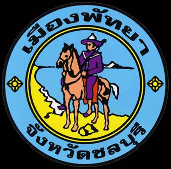

เมืองพัทยา เป็นองค์กรปกครองส่วนท้องถิ่นรูปแบบพิเศษแห่งที่สองของประเทศไทย (อีกแห่งหนึ่งคือ กรุงเทพมหานคร) ตั้งอยู่ในเขตอำเภอบางละมุง จังหวัดชลบุรี มีระดับเทียบเท่าเทศบาลนคร จัดตั้งขึ้นตามพระราชบัญญัติระเบียบบริหารราชการเมืองพัทยา พ.ศ. 2521 เป็นเมืองท่องเที่ยวที่มีหาดทรายและชายทะเลซึ่งมีชื่อเสียงระดับนานาชาติ อยู่ห่างจากกรุงเทพมหานครไปทางตะวันออกเฉียงใต้ ประมาณ 150 กิโลเมตร ตั้งอยู่บนฝั่งทะเลทางทิศตะวันออกของอ่าวไทย โดยแบ่งส่วนภายในของเมืองเป็น 4 ส่วนได้แก่ พัทยาเหนือ พัทยากลาง พัทยาใต้ และหาดจอมเทียน
การเมืองการปกครอง การบริหารเมืองพัทยา ประกอบด้วย สภาเมืองพัทยา และนายกเมืองพัทยา
ตราสัญลักษณ์ประจำเมืองพัทยา

รูปทรงกลมสองวงซ้อนกัน หมายถึง ความเจริญรุดหน้าอย่างต่อเนื่องของเมืองพัทยา
ภาพทหารโบราณขี่ม้าอยู่บนหน้าผา หมายถึง ความเป็นเอกราช (เมื่อครั้งสมัยสมเด็จพระเจ้าตากสินมหาราชเคยแวะมาพักทัพที่พัทยา ก่อนที่จะเข้าตีเมืองจันทบุรีและกลับไปกอบกู้เอกราชของชาติ)
ภาพชายหาด ทะเล และ เกาะ ที่อยู่ด้านหลังคนขี่ม้านั้น หมายถึง สภาพทั่วไปของเมืองพัทยา